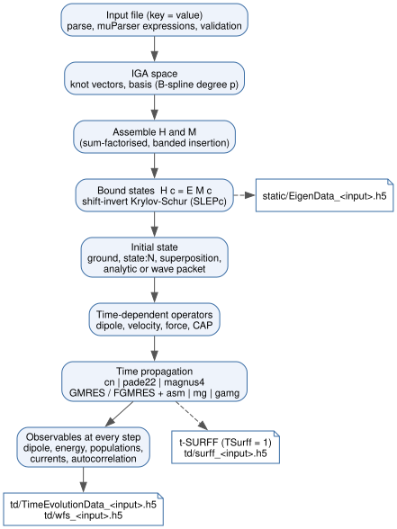

Overview
Governing equations, discretisation and the solver workflow of TDSE-Z. The class structure is described in Architecture; sign conventions in Physics Conventions.
Model
TDSE-Z treats one particle of charge \(q\) (Charge, default
\(-1\)) with a position-dependent mass \(m(\mathbf r)\) (Mass) in
a potential \(V(\mathbf r)\) (Potential). The field-free Hamiltonian
uses the Hermitian BenDaniel–Duke ordering of the kinetic energy
[BenDanielDuke1966],
which reduces to \(-\nabla^2/(2m_0)\) for a constant mass. With
EnableCAP = 1 a complex absorbing potential [Manolopoulos2002] is added
near the domain boundaries (Boundary Conditions). The laser field
\(\mathbf E(t)\) couples in the length gauge,
Discretisation
The wavefunction is expanded in tensor-product B-splines of degree p [deBoor2001] [Bachau2001], \(\psi(\mathbf r,t) = \sum_j c_j(t) B_j(\mathbf r)\), built and integrated by PetIGA [Dalcin2016]. The Galerkin projection of Eq. (2) gives the semi-discrete system
with the overlap (mass) matrix \(M_{ij} = \langle B_i|B_j\rangle\), the
Hamiltonian matrix \(\mathbf H\) of Eq. (1) and the
position matrices \((\mathbf D_a)_{ij} = \langle B_i|x_a|B_j\rangle\).
The sum runs over the axes in Polarization. For Propagator = cn
PETSc TS integrates the residual form
with the theta method at \(\theta = 1/2\) (Crank–Nicolson
[Crank1947]). The pade22 and magnus4 propagators apply the
Padé(2,2) approximant of the step exponential to
Eq. (3), in the second case inside a commutator-free
Magnus scheme [BlanesMoan2006] [Alvermann2011]; see Time Propagation.
Bound states solve the generalised eigenproblem
with SLEPc [Hernandez2005] (shift-invert Krylov–Schur [Stewart2002], see Eigensolver).
Workflow
A run of tdsez.x follows the stages of Fig. 1:
Read and validate the input file (Input File).
Build the knot vectors and the IGA space (Grid & Domain, Knot Sequences).
Assemble \(\mathbf H\) and \(\mathbf M\).
Solve Eq. (5) for
NBoundStatesstates (skipped forNBoundStates = 0with an analytic or wave-packet initial state) and writestatic/EigenData_<input>.h5.Build the initial state (Initial State).
With
EnablePropagation = 1(default): assemble the time-dependent operators, propagate Eq. (3) toFinalTimeand record the observables at every step (Observables).Flush the buffered HDF5 rows and print the timing summary.


Fig. 1 Stages of a TDSE-Z run, from the input file to the static and time-dependent HDF5 output. Dashed arrows mark optional output.
Output files
<input> is the file name of the input file (without directories).
File |
Content |
|---|---|
|
Spectrum, eigenstates (with |
|
Dipole operator matrices in PETSc binary format; written with
|
|
Transition dipoles and oscillator strengths between the bound states; written at the start of a propagation run. |
|
Degenerate-shell splitting log (2D, |
|
Time series: dipoles, energies, currents, populations, autocorrelation. |
|
Wavefunction snapshots every |
|
t-SURFF momentum spectrum ( |
|
PETSc |
Dataset layouts are listed in HDF5 Output Schema. The post-processors
tdmprocessor, tdmselect and drecprocessor read the static/
files (Post-Processing).